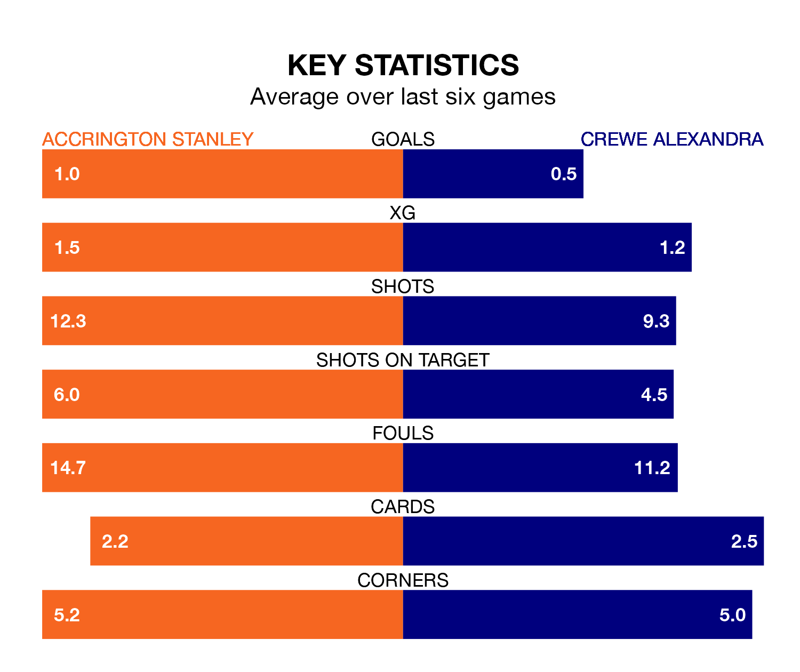

Accrington Stanley are on a poor run ahead of hosting Crewe Alexandra at the Wham Stadium on Saturday, with just four points collected from their last six games.
Accrington have picked up one win and one draw in their last six EFL League Two games, and face a Railwaymen side whose last six games have brought one win and two draws.
With 67 goals in 41 games so far this season, Crewe are scoring more than average in the league with 1.6 goals per game. And they are conceding fewer than average, letting in 58 goals at a rate of 1.4 per game.
Accrington, meanwhile, are below average scorers, with 1.3 goals per game, compared to a league average of 1.5. They have conceded 1.5 goals per game.
In the last 10 years, Accrington and Crewe have played each other on 11 occasions. Accrington won seven of them, Crewe three, and they drew once.
On average, Accrington scored 1.5 goals and the Railwaymen 1.2 in those matches.
Their last meeting was on December 16, when they played out a 3-3 draw.
The Railwaymen are sixth in the table after 41 games, of which they have won 18 and drawn 12, earning 66 points.
Stanley are 12 places behind the away side in 18th, with 14 wins and eight draws putting them on 50 points.
Accrington's last match was on March 29, a 2-1 loss against Morecambe, with Lewis Shipley getting the goal for Accrington.
Crewe lost 3-0 against Forest Green Rovers last time out, on Monday.
Updated: 16:41 (UTC), 04/04/24